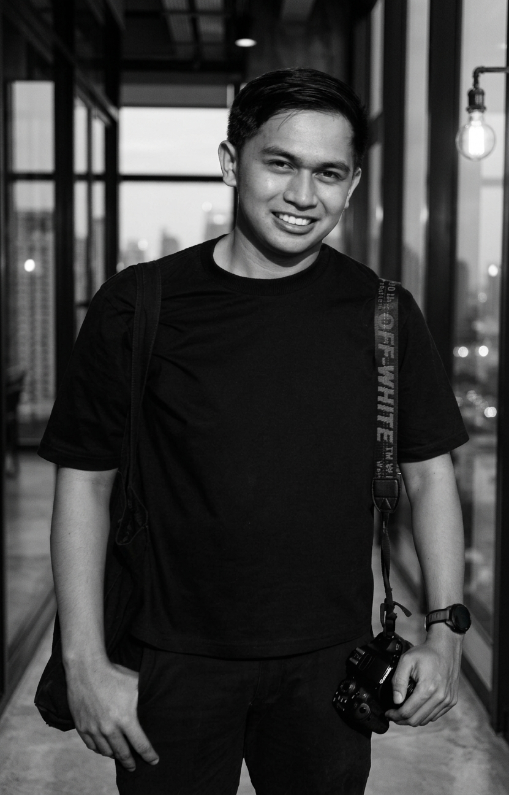

Visual Storytelling
Capturing unscripted moments & timeless stories.
Visual narrator specializing in event coverage, portraits, and authentic documentary moments.
Visual Storytelling
Visual narrator specializing in event coverage, portraits, and authentic documentary moments.


What I Do
From milestone celebrations to quiet moments on the street, I photograph the stories worth keeping.
Candid, documentary-style coverage of your celebrations, from the big moments to the small details in between.
Natural-light and on-location sessions that bring out your personality and feel like you.
Where it all started. Unscripted frames of everyday life, people, and the city as it moves.
Open walks for anyone who loves to shoot. Explore, learn, and share the craft together.
Have an event or idea in mind?
Book a Session
Biography
Photographer & Visual Storyteller • Based in Cebu, Philippines
I'm Gio, a photographer based in Cebu, Philippines. What started as a hobby with a camera and a lot of curiosity has grown into three years of shooting on the side, alongside my full-time work in the City Government. Photography is where I slow down and pay attention to people, light, and the small moments that usually go unnoticed.
I cover birthdays, christenings, events, and concerts from start to finish, with a candid, unscripted approach so your photos feel natural instead of stiff. I also shoot portraits, along with street photography and photowalks, where it all began.
I mostly shoot on weekends, and I'm open to weekday bookings depending on your schedule. My rates are affordable, because having your special moments beautifully captured shouldn't be out of reach.
Based in
Cebu, Philippines
Specialties
Events, Christenings, Portraits
Availability
Weekends & flexible weekdays